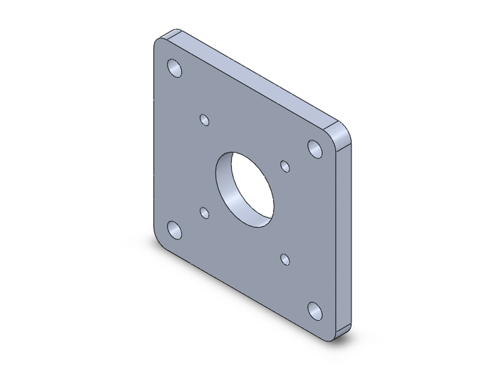
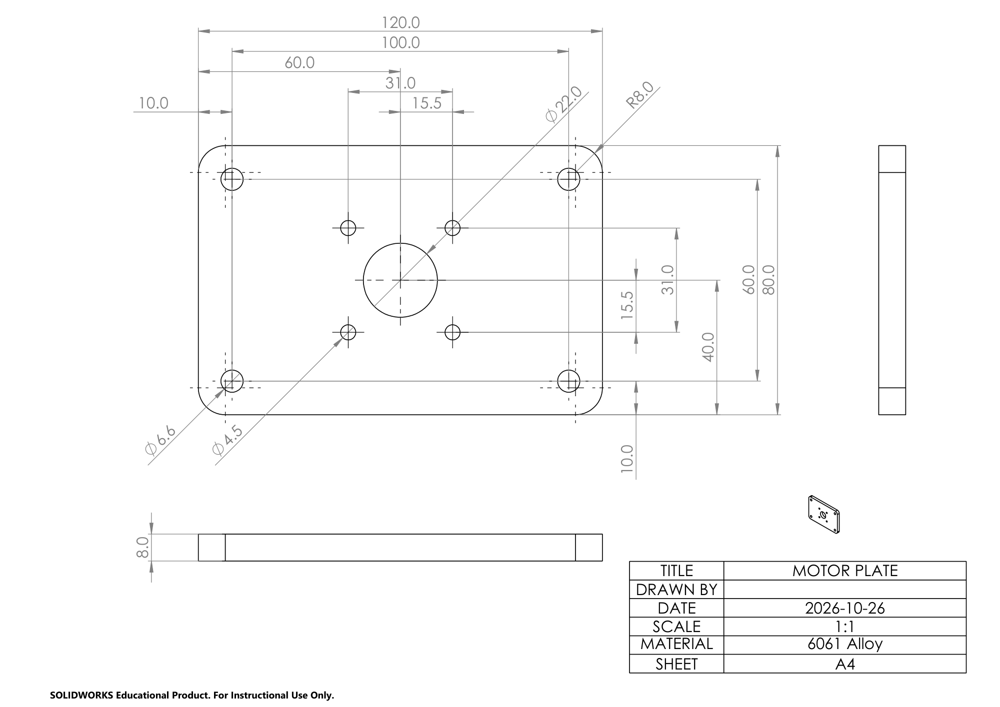
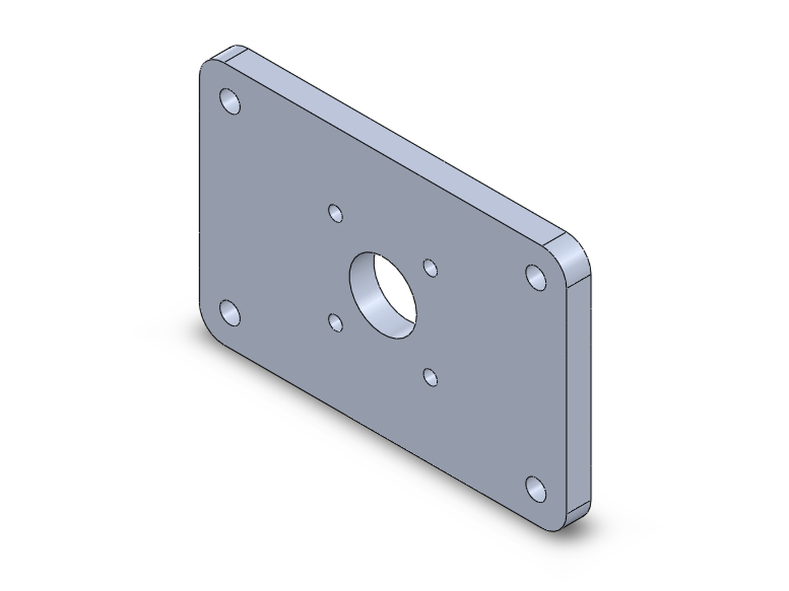

Describe a part in plain language. Your AI app builds it in SOLIDWORKS on your own computer, with real features and fully defined sketches, and measures every result.
Tested with Claude Desktop and Claude Code; also used with Antigravity. Free and open source.
Built from official SOLIDWORKS practice problems and measured against their answers: See all 22 results →

A real conversation: your side as typed, the AI's words shortened (…) but never changed, and the saved part.
Two ways in
Say what you need in your own words. The AI suggests a complete plan, you say yes, it builds.
Give your AI app a picture or PDF of an engineering drawing. It builds the part from it.

→
How it works
FullyDefined is an MCP server: it gives your AI app the tools to drive SOLIDWORKS.
Sizes, holes, material, in your own words. The AI is guided to ask once, at the start, for anything missing.
Sketches, extrudes, cuts, Hole Wizard holes, fillets, patterns: real features in your own SOLIDWORKS.
The tools read volume, size, positions and sketch status back from the model, to report against what you asked.
What you get
A feature tree you would have built yourself: change a dimension later and the model follows.
Dimensioned and related from the sizes and edges you named, the way an engineer would build them.
The tools answer with numbers measured from the model, so a wrong result shows instead of hiding.
The report
Its report on the finished part, measured from the saved model; the volume and sketch status read back from the same file.
| Plate | 70.0 × 70.0 × 6.0 mm (planned 70 × 70 × 6 mm) |
|---|---|
| Centre bore | Ø22.5 (r 11.25), centred on the origin |
| Motor holes | 4 × Ø3.4, centres at ±15.5 mm |
| Plate mounting holes | 4 × Ø5.5, centres at ±27 mm (8.0 mm from each edge) |
| Corner fillets | R5 on all 4 corners |
| Material | 6061 Alloy, 70.5 g |
| Volume | 26,097.5 mm³ |
| Sketches | ✓ every sketch fully defined |
Works with
Your data
FullyDefined runs on your computer, next to SOLIDWORKS. It sends nothing anywhere itself and has no telemetry: it only answers your AI app.
What your AI provider sees is what your AI app sends it: your messages and the tools' answers,
such as feature names, sizes, file paths and measurements (and a picture of the model, when one is asked
for). Settings and a log stay on your PC, in %APPDATA%\solidworks-mcp.
Questions
Yes. The installer is not code-signed, so Windows SmartScreen shows "Windows protected your PC". Click More info, then Run anyway. Install shows it.
It is tested on SOLIDWORKS 2026, set to English. Other versions are not tested.
Yes: free and open source under the MIT licence. You need your own SOLIDWORKS licence and an AI app.
Your messages and the tools' answers, through your AI app and under its terms. FullyDefined itself sends nothing anywhere.